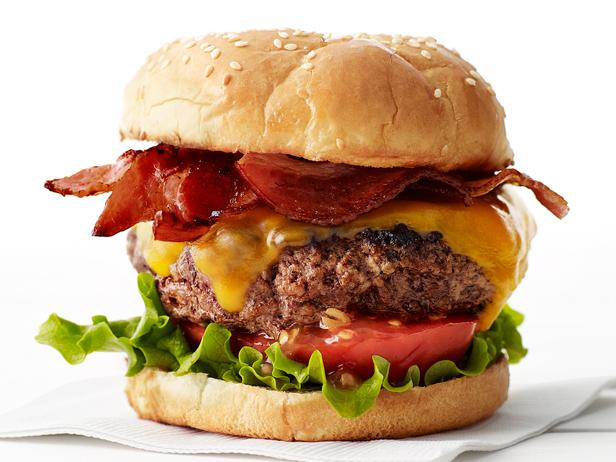

Burger

The best burger recipe
The best burger recipe for summertime grilling! This juicy burger is
jam packed with all kinds of stuff has no tasteless bread crumbs. Serve
on buns with your favorite condiments.
This recipe will approximately take 20 minutes total to prepare
with 10 minutes of prep time and 10 minutes of cook time.
Once finished you will be left with 4 perfect burgers.
Ingredients
- 1 1/2 pounds lean ground beef
- 1/2 onion, finely chopped
- 1/2 cup shredded colby jack or cheddar cheese
- 1 egg
- 1 ounce envelope dry onion soup mix
- 1 clove garlic, minced
- 1 tablespoon garlic powder
- 1 teaspoon soy sauce
- 1 teaspoon worcestershire sauce
- 1 teaspoon dried parsley
- 1 teaspoon dried basil
- 1 teaspoon dried oregano
- 1/2 teaspoon crushed dried rosemary
- salt and pepper to taste
Steps
- Preheat an outdoor grill for high heat and lightly oil the grate.
- Meanwhile, combine ground beef, onion, cheese, egg, onion soup mix, minced garlic, garlic powder, soy sauce, Worcestershire sauce, parsley, basil, oregano, rosemary, salt, and pepper in a large bowl. Use your hands to form the mixture into 4 patties.
- Cook patties on the preheated grill until no longer pink in the center and the juices run clear, about 4 to 5 minutes per side. An instant-read thermometer inserted into the center should read at least 165 degrees F (74 degrees C).
Nutrition Facts
445 Calories 28g Fat 9g Carbs 39g Protein